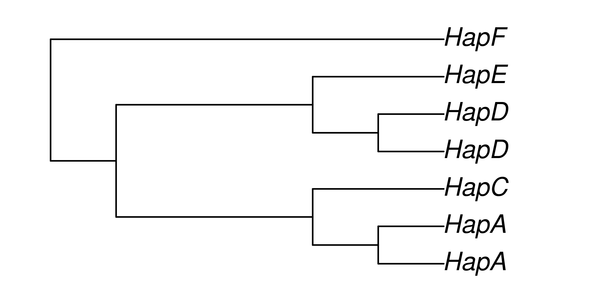
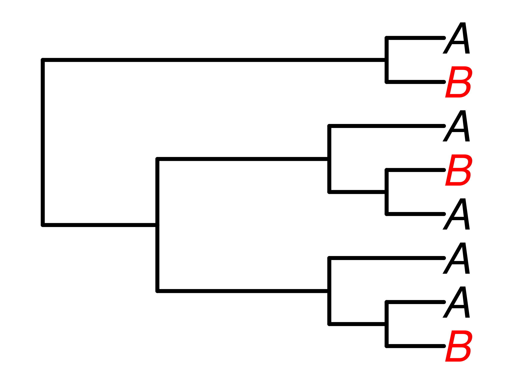
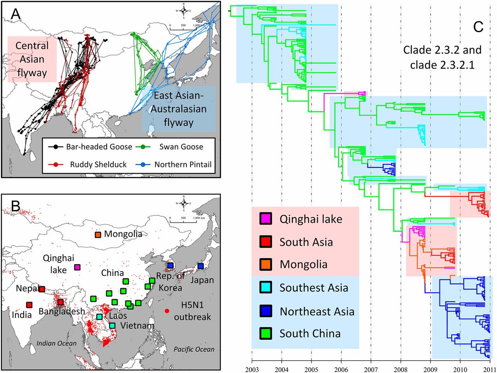

Phylogenetics of dispersal
BIOL33221: Bioinformatics
Dr Axel Barlow
email: axel.barlow@ntu.ac.uk, office: IBRC115
Phylogenetics of dispersal
- Population trees
- The process of dispersal
- Examples
- Viral pandemics
Essential reading
We can calculate phylogenies of different things...
Species trees
- These are phylogenies of species
- Each tip is a different, reproductively isolated species
- Can be inferred from a variety of data types

Gene trees
- These are phylogenies of individual loci (e.g. a gene)
- Or related sets of loci (e.g. multigene families)
- Each tip is a different allele (i.e. a gene variant)

Population-level trees
- Each tip is an individual
- Each node is their most recent ancestor (coalescence event)
- Shows the relationships of individuals and populations

How does that work?

Calculating population-level trees
We'll think about mitochondrial haplotypes (diploid loci 2x more complex)
- Sequence variation provides phylogenetic information
- Similar sequences are more closely related
- Branch lengths are (loosely) proportional to sequence divergence
- Coalescence times also depend on population size
- Described by coalescent theory

Human mitochondrial phylogeny
Rishishwar L, Jordan IK. BMC Genomics. 2017;18:140. CC BY 4.0

PhyloTree.org visualisation
Geographic occurrence

Rishishwar L, Jordan IK. BMC Genomics. 2017;18:140. CC BY 4.0

PIECE TO CAMERA
The dispersal process
- Imagine 2 Islands: A and B
- B is colonised from A by a single individual
- This transports one lineage from A to the new island B
- Individuals from B are nested within the A clade


Subsequent expansion
- The newly introduced B population expands
- All individuals are descendants of the founding lineage
- The B clade is nested within A
- A individuals are paraphyletic with respect to B


Examples: Golden Lancehead
 Queimada Grande, Prefeitura Municipal de Itanhaém, CC BY 2.5
Queimada Grande, Prefeitura Municipal de Itanhaém, CC BY 2.5
 Bothrops insularis, Nayeryouakim, CC BY 4.0
Bothrops insularis, Nayeryouakim, CC BY 4.0
 Bothrops jararaca, Fernando Tatagiba, CC BY 3.0
Bothrops jararaca, Fernando Tatagiba, CC BY 3.0
Examples: Golden Lancehead

Wüster et al. Journal of Zoology 266.1 (2005): 1-10
Bothrops insularis, Nayeryouakim, CC BY 4.0
Bothrops jararaca, Fernando Tatagiba, CC BY 3.0
Examples: Barbados anoles
 Anolis roquet, Adamhesim, CC BY 4.0
Anolis roquet, Adamhesim, CC BY 4.0
 Anolis extremus, Postdlf, CC BY SA-3.0
Anolis extremus, Postdlf, CC BY SA-3.0

Examples: Barbados anoles

Thorpe et al. Mol phylogenet evol 127 (2018): 682-695.
Complicating factors
- So far we have considered a small and genetically similar founding population
- What happens if the founding population is large and genetically diverse?
- This can "look" like multiple colonisation events
- And even make the direction of colonisation uncertain


So what about viruses?
Racoon rabies in Ontario
Nadin-Davis et al. Virus Research 232 (2017): 123-133. CC BY 4.0


Avian influenza H5N1 in Asia
Tian et al. Proceedings of the National Academy of Sciences 112.1 (2015): 172-177.

Ebola virus in West Africa
Suchard, et al. Virus evolution 4.1 (2018): vey016.

Phylogenetics of dispersal
- Population trees
- The process of dispersal
- Examples
- Viral pandemics
Next time
Bayesian phylogenetics